When developing multiple proxies you will eventually notice some common patterns on the sequence of policies used across many proxies, as well as common functionality that can be potentially reused instead of repeated.
What you'll learn
- How to leverage Shared Flows to implement common patterns and pre package functionality to be reused across multiple proxies
What you'll need
- Your proxy created in the previous lab
Use case
You want to leverage configurations already created in one proxy, across many other proxies by reusing it.
Download a working solution to the previous lab as a proxy bundle ZIP file:
Prerequisites:
- Target Server: TS-Retail (instructions in lab 2)
- Product, Developer and App (instructions in lab 3)
- Key Value Map: ProductsKVM (instructions in lab 6)
Find your spec ID. When you open your spec in the spec editor, the link will be in this format, with the spec ID at the end of the URL:
https://apigee.com/organizations/YOURORG/specs/folder/FOLDERID/editor/YOURSPECID
Navigate to your proxy and upload the bundle as a new revision:

Select the association.json resource. Replace YOURORG and YOURSPECID with the values from the spec URL.

Once updated, the association.json should look something like this:
{
"url": "/organizations/apigeek-eval/specs/doc/207966/content"
}
Click Save to save your proxy. Open the Deployment menu, and check the deployment status. Click on test to deploy this revision of the proxy.

Test will be green when it is deployed.

- Create a new Shared Flow
- Add the KVM and Basic Authentication policies to the shared flow
- Remove the KVM and Basic Auth policies from the proxy
- Reference the Shared Flow via a Flow Callout in your API
- Test
Let's start by adding a new shared flow.
Click on Develop/Shared Flows
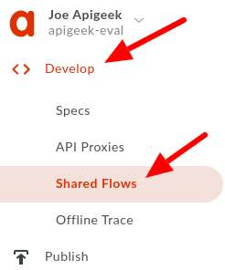
then on the ‘+ Shared Flow' sign on the upper right corner. Select 'New Shared Flow'.
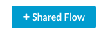
This will bring up a new pop up for the new flow details. Set the name to:
BackendCredentials
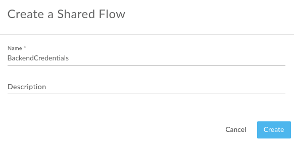
The following steps are the same as in the ‘Internal Threats Protection lab', except they are now performed on the shared flow.
Select the newly created flow to see its UI representation of the policies. It is empty for now and we'll be adding 2 new policies to its request path.
Click on ‘+ Step'
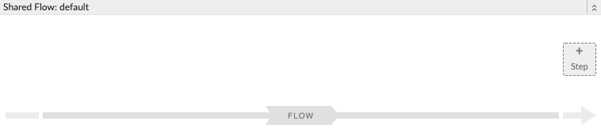
In the ‘Add Step' pop up, select the Key Value Map Operations policy, and change the name:
KVM-GetCredentials
Click Add.
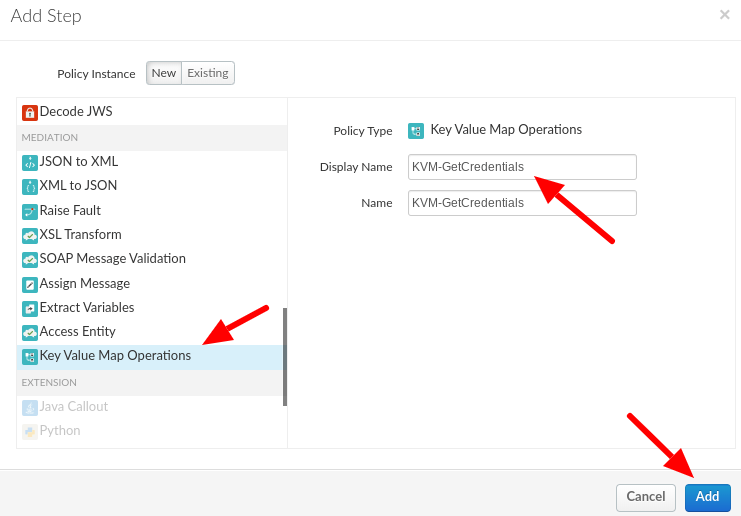
Overwrite the policy's configuration with the following:
<KeyValueMapOperations async="false" continueOnError="false" enabled="true" name="KVM-GetCredentials" mapIdentifier="ProductsKVM">
<ExclusiveCache>false</ExclusiveCache>
<ExpiryTimeInSecs>60</ExpiryTimeInSecs>
<Get assignTo="private.backendId">
<Key>
<Parameter>backendId</Parameter>
</Key>
</Get>
<Get assignTo="private.backendSecret">
<Key>
<Parameter>backendSecret</Parameter>
</Key>
</Get>
<Scope>environment</Scope>
</KeyValueMapOperations>We will now use these private variables to build an Authorization header for our backend service.
For that, we'll add a Basic Authentication policy to the flow with the name:
BA-AddAuthHeader
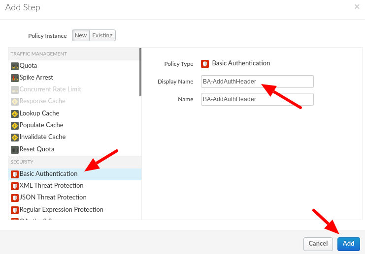
Overwrite the policy's configuration with the following:
<BasicAuthentication async="false" continueOnError="false" enabled="true" name="BA-AddAuthHeader">
<Operation>Encode</Operation>
<IgnoreUnresolvedVariables>false</IgnoreUnresolvedVariables>
<User ref="private.backendId"/>
<Password ref="private.backendSecret"/>
<AssignTo createNew="false">request.header.Authorization</AssignTo>
</BasicAuthentication>Your flow should look like this:
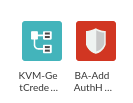
Save and make sure to deploy your flow to the test environment.
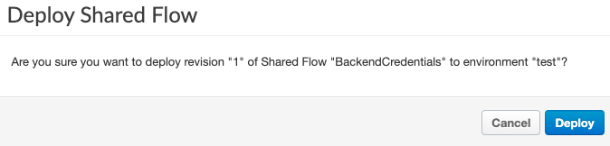
Check by looking into the Deployment drop down. You should see a green circle next to the test environment.
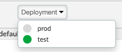
Back in our API proxy, select the ‘updateProductById' flow.
You'll see the same 2 policies we added in our shared flow, KVM-GetCredentials and BA-AddAuthHeader. Let's go ahead and remove them. For that, simply hover the mouse over each policy until you see the ‘X' on the corner of the policy and then click on it:
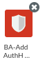
After you are done removing both policies (KVM and Basic Auth), let's remove them from the proxy as well.
In the list of policies, find the 2 policies. They should now also show a ‘broken link' icon to the left of them. Click on the X button to remove them from the proxy.
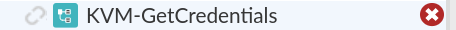
Save as a new revision:
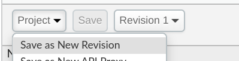
And make sure you deploy the new revision:
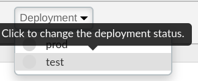
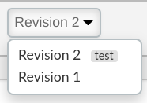
Still in the same flow (updateProductById), add a Flow Callout policy to reference our Shared Flow.
Click on the ‘+ Step' in the request flow. Pick the shared flow from the drop down options in the ‘Add Step' popup. Change the name:
FC-BackendCredentials
and select the BackendCredentials shared flow, and click Add:
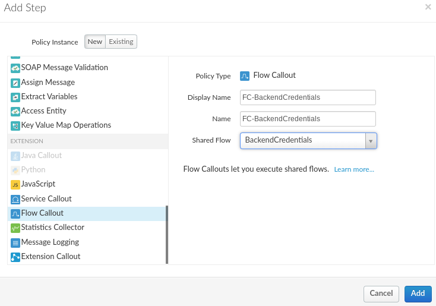
Your updateProductById flow should now look like:
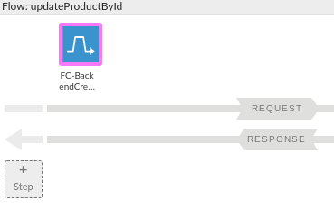
Save and deploy your proxy.
To test, first retrieve the list of products by issuing a GET to /products.
Look for a product ID:
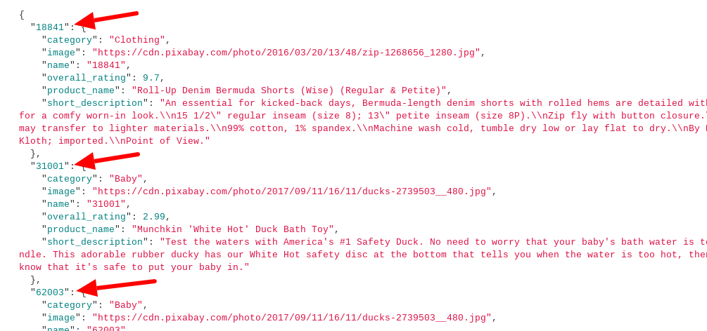
Use one of them to test the update product flow:
URL:
PATCH /products/{id}Headers:
apikey: {key of application}
Content-Type: application/jsonBody:
{
"overall_rating": 1.1
}You can choose whatever rating you would like. The only field that can be updated for a product is the overall_rating.
Example:
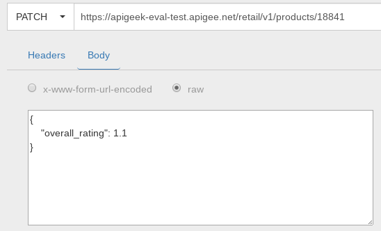
You should get a 200 response code, indicating the rating has been updated. Retrieve the product again to see that it has changed:
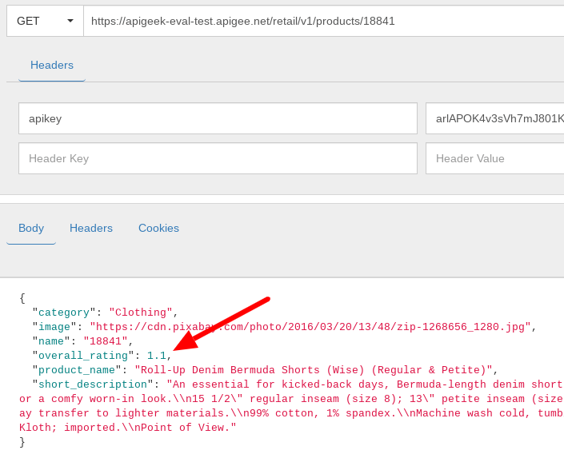
You have successfully created a shared flow and called it from your proxy.